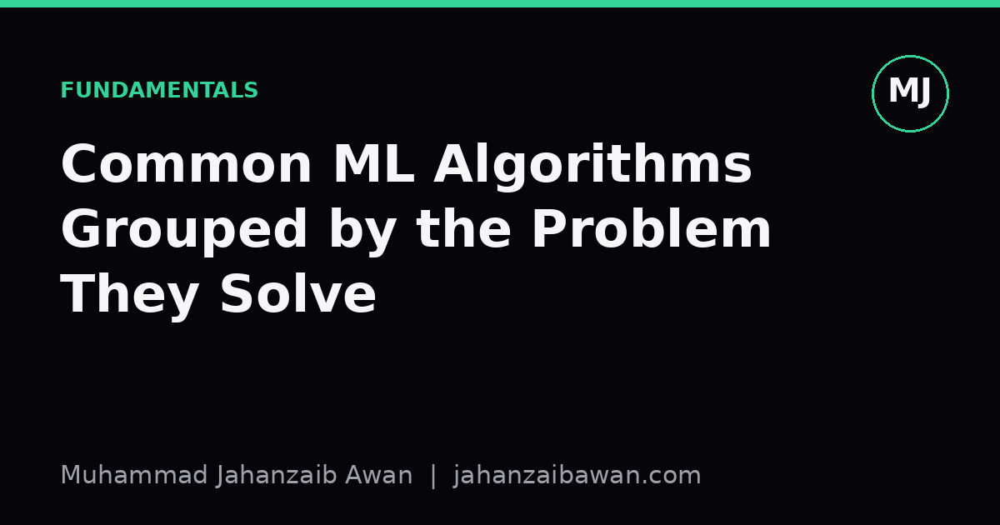
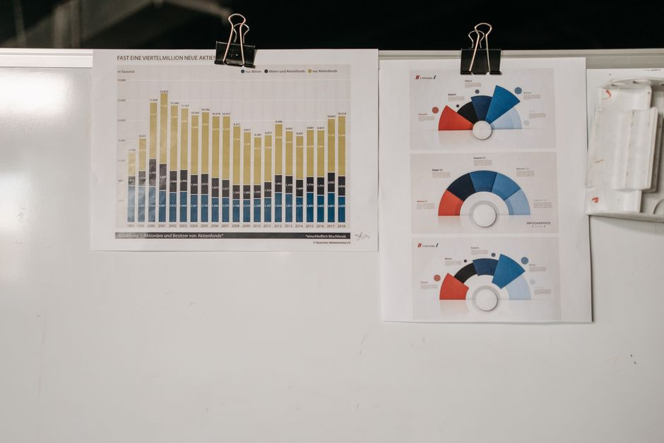

Common ML Algorithms Grouped by the Problem They Solve
Forget the alphabet soup of algorithm names. Here is how I organise the standard toolkit by what question each method is actually trying to answer.

Why the taxonomy matters more than the names
When I started out, I collected algorithm names the way some people collect stamps: logistic regression, random forests, k-means, PCA, support vector machines. The trouble is that a list of names tells you nothing about when to reach for each one. What actually matters is the shape of the problem in front of you. Do you have labelled outcomes or not? Is the target a category or a number? Are you trying to predict something, or just understand the structure of your data? Once you sort algorithms by the question they answer rather than by their mathematical lineage, choosing a method stops feeling arbitrary.
This matters practically because the wrong grouping leads to wasted effort. I have seen people spend a weekend tuning a clustering algorithm to 'predict' customer churn, when churn is a labelled binary outcome and a supervised classifier would have taken an afternoon and performed better. The tool was fine; the diagnosis of the problem was wrong. So before touching a library, it is worth asking: what is the actual target, and what decision will this model support?
Predicting a label: classification
Classification answers the question: given these inputs, which category does this example belong to? Logistic regression, decision trees, random forests, gradient boosted trees, support vector machines, and k-nearest neighbours all live here, despite being built on very different mathematics. What unites them is the target: a discrete set of classes, such as spam or not spam, or one of five product categories.
Here is a worked intuition. Suppose you are building a model to flag fraudulent transactions, and in your historical data, 2% of transactions are fraudulent. A naive classifier that always predicts 'not fraud' gets 98% accuracy and is completely useless. This is why, for classification problems with imbalanced classes, I always check precision, recall, and the confusion matrix before trusting an accuracy figure. A logistic regression baseline that catches 40% of fraud cases with a 10% false positive rate is far more informative than a complex model reported only via accuracy.
The choice between algorithms in this group is mostly about the shape of the decision boundary and the amount of data you have. Logistic regression draws a straight line (or hyperplane) between classes and is a strong, interpretable baseline. Tree-based ensembles like random forests and gradient boosting can capture non-linear interactions between features without much manual engineering, which is why they tend to win on tabular data competitions. Support vector machines shine when the boundary is complex but the dataset is modest in size, since they scale poorly to millions of rows. None of these is universally best; the honest answer is to try a simple baseline first and only add complexity if it earns its keep on a proper held-out test set.

Predicting a number: regression
Regression answers a different question: given these inputs, what numeric value should we expect? Linear regression, ridge and lasso regression, regression trees, and gradient boosted regressors fall here. The mechanics often overlap heavily with classification algorithms (a decision tree can do either job), but the target and the evaluation metric change completely.
Consider predicting house prices from features like square footage, number of bedrooms, and location. A linear regression model might tell you that each additional bedroom adds roughly £15,000 to the predicted price, holding other factors constant, which is useful both for prediction and for explaining the model's reasoning to a non-technical stakeholder. A gradient boosted regressor might shave the mean absolute error down further, from £28,000 to £22,000 on a held-out set, but it will not hand you a tidy coefficient to quote in a meeting. That trade-off between interpretability and raw predictive accuracy is one of the most practical decisions in applied regression work, and it is worth making deliberately rather than defaulting to whichever model is fashionable.
One thing I am strict about here is metric choice. Mean squared error punishes large errors heavily, which is appropriate if a single very wrong prediction is costly, such as underpricing a house by £100,000. Mean absolute error treats all errors proportionally, which suits problems where consistent small errors matter more than occasional large ones. Picking the metric before picking the algorithm keeps the whole exercise honest.
Finding structure without labels
The third family answers a question with no ground truth attached: what structure exists in this data on its own? Clustering algorithms like k-means and hierarchical clustering group similar examples together. Dimensionality reduction methods like PCA and t-SNE compress many correlated features into a smaller set of components, often for visualisation or as a preprocessing step before a supervised model. Anomaly detection methods flag points that do not fit the general pattern, which is genuinely useful for fraud or fault detection when labelled examples of the rare event are scarce or unreliable.
A concrete example: imagine a retailer with transaction data for 50,000 customers and no existing segment labels. Running k-means with four clusters might reveal a group of high-frequency, low-spend shoppers, a group of occasional big spenders, and so on. There is no 'correct' answer to check against, which is exactly why unsupervised methods demand more scepticism. I always sanity-check clusters against business logic and try a couple of different numbers of clusters, rather than trusting the first output because the silhouette score looked decent.
The practical takeaway across all three families is the same: identify what kind of target you actually have, pick the simplest method that matches that shape, evaluate it with a metric and a split that reflects how the model will be used, and only escalate to something fancier when the baseline demonstrably falls short. Algorithm names are the least important part of the decision; the structure of the problem is everything.
